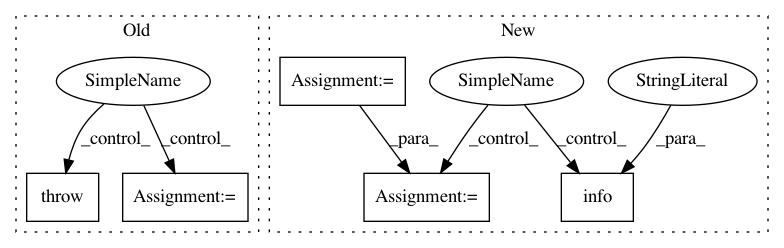

7ed8c6bbcfb2dc0da9b1011ba21d12791239de79,deepvariant/postprocess_variants.py,,main,#Any#,932
Before Change
record = tf_utils.get_one_example_from_examples_path(
",".join(paths), proto=deepvariant_pb2.CallVariantsOutput)
if record is None:
raise ValueError("Cannot find any records in {}".format(",".join(paths)))
sample_name = _extract_single_sample_name(record)
header = dv_vcf_constants.deepvariant_header(
contigs=contigs, sample_names=[sample_name])
use_csi = _decide_to_use_csi(contigs)
with tempfile.NamedTemporaryFile() as temp:
start_time = time.time()
postprocess_variants_lib.process_single_sites_tfrecords(
contigs, paths, temp.name)
logging.info("CVO sorting took %s minutes",
(time.time() - start_time) / 60)
logging.info("Transforming call_variants_output to variants.")
start_time = time.time()
independent_variants = _transform_call_variants_output_to_variants(
input_sorted_tfrecord_path=temp.name,
qual_filter=FLAGS.qual_filter,
multi_allelic_qual_filter=FLAGS.multi_allelic_qual_filter,
After Change
record = tf_utils.get_one_example_from_examples_path(
",".join(paths), proto=deepvariant_pb2.CallVariantsOutput)
if record is None:
logging.info("call_variants_output is empty. Writing out empty VCF.")
sample_name = dv_constants.DEFAULT_SAMPLE_NAME
variant_generator = iter([])
else:
sample_name = _extract_single_sample_name(record)
temp = tempfile.NamedTemporaryFile()
In pattern: SUPERPATTERN
Frequency: 3
Non-data size: 5
Instances
Project Name: google/deepvariant
Commit Name: 7ed8c6bbcfb2dc0da9b1011ba21d12791239de79
Time: 2019-10-21
Author: gunjanbaid@google.com
File Name: deepvariant/postprocess_variants.py
Class Name:
Method Name: main
Project Name: uber/ludwig
Commit Name: 7d9db23a389499c2764fb850cd19f853cc3e8565
Time: 2019-08-08
Author: smiryala@uber.com
File Name: ludwig/features/image_feature.py
Class Name: ImageBaseFeature
Method Name: add_feature_data
Project Name: uber/ludwig
Commit Name: 5667af96dade79ef77194d519182d4989494b3a4
Time: 2019-08-25
Author: smiryala@uber.com
File Name: ludwig/features/image_feature.py
Class Name: ImageBaseFeature
Method Name: add_feature_data